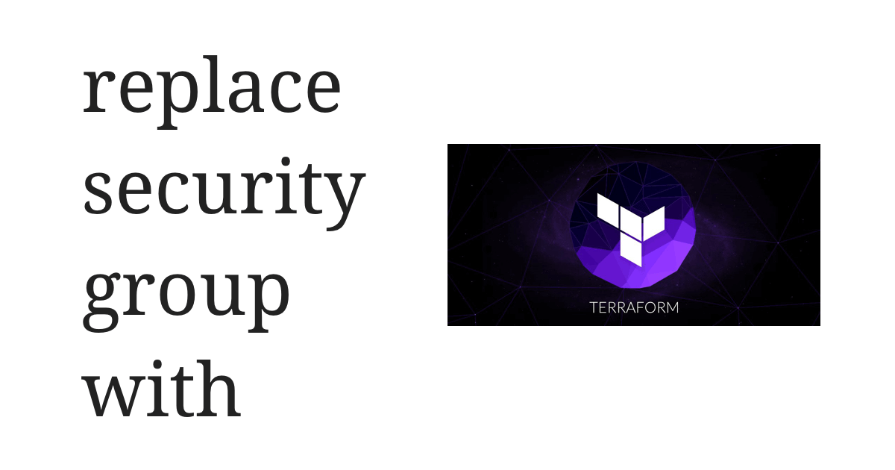

AWS 的限制
- Security group 的 description 不可以更改，如果一定要更改，要先刪除之後再重建。
- EC2 跟 RDS 至少要有一個 security group，不可以完全沒有。
Terraform 的折衷辦法
以下每個步驟之間，都要輸入以下兩個指令，最後一步結束之後也要輸入：
1 | $ terraform plan |
不建議兩步合併一步做，因為可能會破壞掉 Terraform 的 terraform.tfstate。
- 先在
*.tf檔案裡，使用 aws_security_group 建立一個沒有ingress、egressrule 的 dummy security group，然後新增到要抽換的 aws_instance 或 aws_db_instance 的 vpc_security_group_ids 裡。 - 修改
*.tf檔案的aws_instance或aws_db_instanceblock，把要抽換掉的 security group 從vpc_security_group_ids移除掉。注意如果有公開的 port，instance 會全部斷網，如果有承諾 zero downtime 要想辦法避開，例如先把原來 security group 的 rule 全部複製到 dummy security group，可能會需要 aws_security_group_rule 的協助。 - 修改
*.tf檔案，先移除或註解掉要抽換的 security group。注意一定要確定 security group 都從 instance 上 detach 了，否則 Terraform 在 apply 階段就會一直卡著。我個人推測是因為 AWS 的 API 也沒有直接針對 instance 至少要有一個 security group 這件事拋出錯誤，所以 Terraform 就會一直等待 AWS 回覆。 - 修改
*.tf檔案，把已經抽換掉的新 security group 重新 attach 回aws_instance或aws_db_instance的vpc_security_group_ids裡。 - 修改
*.tf檔案，將 dummy security group 從aws_instance或aws_db_instance的vpc_security_group_idsdetach 掉。 - 修改
*.tf檔案，移除或註解掉 dummy security group 的aws_security_groupresource block。
結語
使用 Terraform 抽換 security group 的步驟不難但非常繁雜，很難想到有什麼原因會讓 AWS 不准使用者修改 security group 的 description。